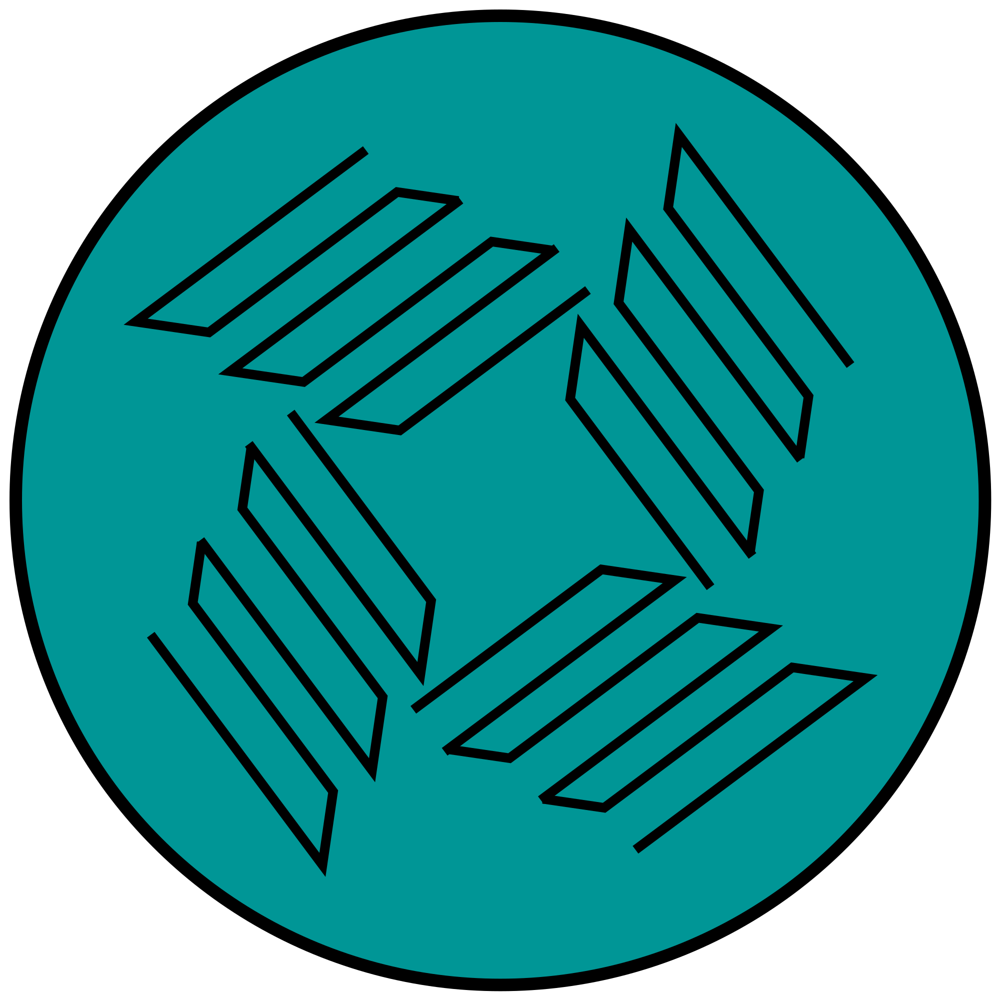

 Видеоредактор
Загрузите видео
Перетащите файл сюда или
Выбрать файл
—
Цветокоррекция
Цветовой тон:
Насыщенность:
Контрастность:
Яркость:
Текст
Текст:
Размер
Цвет
Шрифт
Arial
Roboto
Times New Roman
Позиция X:
Позиция Y:
Эффекты
Blur:
Чёрно-белый:
Инверсия:
Превью
Ваш браузер не поддерживает видео.
Аудио
Громкость:
Рендер
Формат:
MP4 (H.264/AAC)
WebM (VP9/Opus)
MKV (H.264/AAC)
Разрешение:
HD
FullHD
4K
Скачать